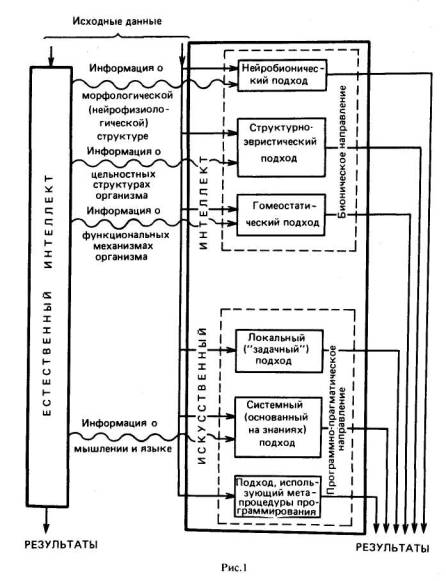
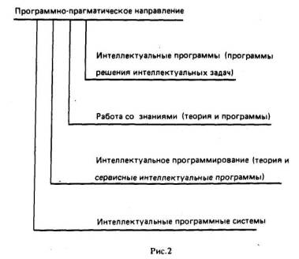
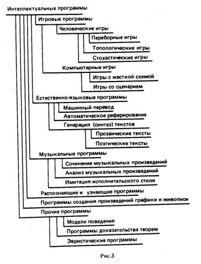
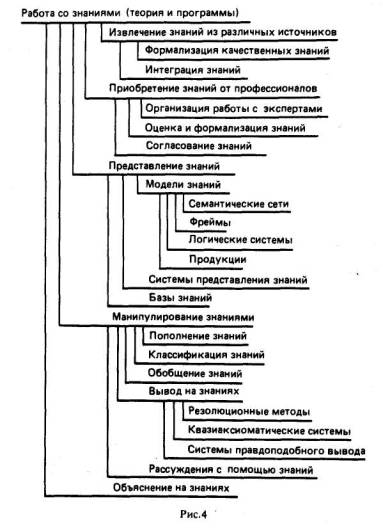
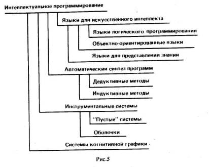
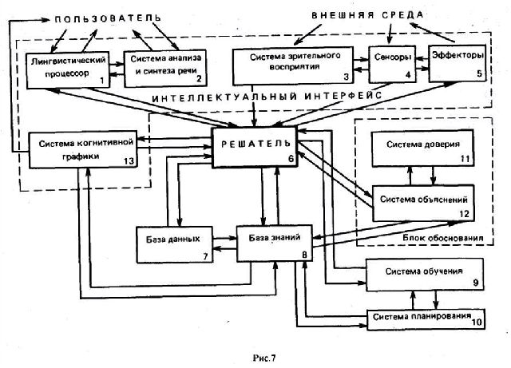

Авторы-составители
А.Н. Аверкин, М.Г. Гаазе-Рапопорт, Д.А. Поспелов
Москва, Радио и связь, 1992
Специальная терминология по искусственному интеллекту и интеллектуальным системам начала формироваться в 60-е годы XX в. Первый этап в формировании терминологии всегда отличается наличием многих синонимичных терминов, которые используют различные школы и группы специалистов. На этом этапе термины быстро возникают, и часть из них также быстро исчезает. К середине 70-х годов терминология в области искусственного интеллекта стала устанавливаться. Появились термины, которые признало подавляющее большинство специалистов. Все эти термины (за редким исключением) по происхождению англоязычные, так как именно в США проводились интенсивные исследования в этой области. Окончательно основная терминология закрепилась в первой половине 80-х годов. С этого периода стали издаваться словари и энциклопедические справочники по искусственному интеллекту.
Трудность создания толкового словаря по искусственному интеллекту связана с междисциплинарным характером исследований в этой области. Так как в искусственном интеллекте используются методы, традиционно развиваемые в логике, психологии, лингвистике, кибернетике, дискретной математике и программировании, среди терминов, характерных для искусственного интеллекта, встречается немало терминов из других наук.
Обсуждение толкового словаря показало, что имеются два крайних случая: включить в него термины, которые используются только в искусственном интеллекте и не заимствованы им из других наук, или включить в него все термины смежных с искусственным интеллектом наук, если они встречаются в работах специалистов данного направления. Составителями словаря было принято промежуточное решение, которое, конечно, тут же поставило перед ними проблему границы. Используя коллективный опыт специалистов ряда стран и СССР, составители попытались определить эту естественную границу, связав ее с частотой встречаемости заимствованных в искусственный интеллект терминов.
В обсуждении базового словника принимали участие специалисты из шести стран, входившие в рабочую группу РГ-22 международной комиссии "Научные вопросы вычислительной техники": И. Ненова, Р. Павлов, В. Сгурев (Болгария); Й. Буссе (Германия); М. Домбровский (Польша); И. Джорджеску (Румыния); А. Н. Аверкин, М. Г. Гаазе-Рапопорт, Д. А. Поспелов, В. Ф. Хорошевский (СССР); Й. Миклошко, И. Пландер, Й. Шайда (Чехо-Словакия). При написании толковых статей советскими специалистами потребовалось расширение базового словника. Поэтому в тексте словаря включены дополнительные термины.
Для облегчения работы со словарем он предваряется статьей, написанной М. Г. Гаазе-Рапопортом и Д. А. Поспеловым, в которой дается общая характеристика структуры исследований в области искусственного интеллекта, как она выглядит в настоящее время. Материал статьи можно рассматривать как попытку системного анализа этого нового направления. Более подробно проблемы искусственного интеллекта изложены в трех книгах справочника "Искусственный интеллект", выпущенного издательством "Радио и связь" в 1990 году.
Все базовые термины переведены на английский, болгарский, венгерский, испанский, немецкий, польский, румынский, словацкий, французский и чешский языки. Для каждого языка имеются два словаря: один упорядочен по алфавиту русского языка, другой - иностранного.
В списке литературы приведены толковые словари, относящиеся к наукам, тесно соприкасающимся с искусственным интеллектом.
Составители словаря благодарят за большую работу по отбору и переводу терминов С.Албу, Й.Буссе, И.Джорджеску, М.Домбровского, М.Н.Домбровского-Кабанченко, Й.Келемена, И.Ненову, Р.Павлова, Н.В.Руссову, П.Сгалла, Е.Сикору, В.Б.Тарасова, Е.Хайчеву, В.Ф.Хорошевского, Й.Шайду.
О пользовании словарем
Словарь содержит около 500 терминов. Все термины расположены в алфавитном порядке. Если термин представляет собой сочетание нескольких слов, то в заголовке статьи в нем на первом месте, как правило, стоит существительное, даже тогда, когда это нарушает привычный порядок (например, вместо термина "Искусственный интеллект" в названии статьи стоит "Интеллект искусственный").
В тексте статьи ссылки на толкуемый термин даются сокращенно: входящие в термин слова заменяются первыми буквами с точкой (например, ссылки на термин "Грамматика сетевая" в статье, посвященной толкованию этого термина, выглядят как Г.С.).
Если в тексте статьи встречаются слова, выделенные курсивом, это означает, что данный термин объясняется в отдельной статье словаря. При этом, в его написании используется привычный порядок слов, который при поиске по ссылке надо в ряде случаев изменить, поставив на первое место существительное.
Иногда термины имеют несколько значений. В этом случае толкования к ним разделяются арабскими цифрами.
Знак * перед термином означает, что этот термин не входит ни в один из двуязычных словарей.
Синонимы даются со ссылкой "См." на более употребительный термин.
Отсылка "См. также" ставится для уточнения содержания толкуемого термина.
Фамилии иностранныхавторов приводятся в русской транскрипции.
Структура исследований в области искусственногоинтеллекта
Научное направление "Искусственный интеллект" зародилось в общем комплексе кибернетических исследований. Развитие средств вычислительной техники, связанное с ним интенсивное совершенствование программирования, расширение областей использования ЭВМ, а также наличие весьма поверхностной аналогии между структурой ЭВМ и структурой мозга человека привели к зарождению двух направлений в исследованиях по искусственному интеллекту.
Первое - назовем его программно-прагматическим - занималось созданием программ, с помощью которых можно было решать те задачи, решение которых до этого считалось исключительно прерогативой человека (распознающие программы, простейшие игровые программы, программы для решения логических задач, поиска, классификации и т. п.).
Второе, которое можно назвать бионическим, интересовалось проблемами искусственного воспроизведения тех структур и процессов, которые характерны для живого человеческого мозга и которые лежат в основе процесса решения задач человеком. Это направление имеет четко выраженный фундаментальный характер, и его интенсивное развитие невозможно без одновременного глубокого изучения мозга нейрофизиологическими, морфологическими и психологическими методами.
Общую структуру исследований в искусственном интеллекте можно представить схемой, изображенной на рис. 1. В бионическом направлении выделяются три различных подхода.
Первый - нейробионический. В его основе лежат системы нейроподобных элементов, из которых создаются системы, способные воспроизводить некоторые интеллектуальные функции. К числу задач, которые, по-видимому, могут быть решены в рамках этого подхода, относится многоканальное (параллельное) распознавание сложных зрительных образов, обучение условным рефлексам и др.
Второй подход - структурно-эвристический. В его основе лежат знания о наблюдаемом поведении объекта, рассматриваемого как "черный" (скорее, "серый") ящик, и соображения о тех структурах (и их свойствах) мозга, которые могли бы обеспечить реализацию наблюдаемых форм поведения.

Наконец, третий подход, интенсивно развивающийся в последнее время, - гомеостатический. В этом случае мозг рассматривается как гомеостатическая система, представляющая собой совокупность противоборствующих (и сотрудничающих) подсистем, в результате функционирования которых обеспечивается нужное равновесие (устойчивость) всей системы в условиях постоянно изменяющихся воздействий среды. Гомеостатические модели подтверждают перспективность этого подхода. Однако в настоящее время еще не существует гомеостатических модулей, которые могли бы рассматриваться как универсальные элементы для создания интеллектуальных систем.
В силу сложностей целей и задач бионического направления в настоящее время доминирующим в искусственном интеллекте является программно-прагматическое направление. При этом подходе не ставится вопрос об адекватности используемых структур и методов тем, которыми пользуется в аналогичных случаях человек, а рассматривается лишь конечный результат решения конкретных задач. Заметим, что в ряде случаев при решении интеллектуальных задач применяются и некоторые бионические соображения, но при этом не они, а конечный результат играет определяющую роль.

В программно-прагматическом направлении также можно выделить три подхода.
Первый подход - локальный или "задачный" - основан на точке зрения, что для каждой задачи, присущей творческой деятельности человека, можно найти способ ее решения на ЭВМ, который, будучи реализован в виде программы, даст результат, либо подобный результату, полученному человеком, либо даже лучший. Разработано много искусных программ такого рода. Типичным примером являются шахматные программы, которые играют в шахматы лучше большинства людей, но в основе их лежат идеи, далекие от тех, которыми пользуются люди при игре.
Второй подход - системный или основанный на знаниях связан с представлением о том, что решение отдельных творческих задач не исчерпывает всей проблематики искусственного интеллекта. Естественный интеллект человека способен не только решать творческие задачи, но при необходимости обучаться тому или иному виду творческой деятельности. Поэтому и программы искусственного интеллекта должны быть ориентированы не только или не столько на решение конкретных интеллектуальных задач, сколько на создание средств, позволяющих автоматически строить программы решения интеллектуальных задач, когда в таких программах возникает необходимость. Этот подход в настоящее время является центральным в программно-прагматическом направлении.
Третий подход рассматривает проблемы создания интеллектуальных систем как часть общей теории программирования (как некоторый новый виток в этой теории). При этом подходе для составления интеллектуальных программ используются обычные программные средства, позволяющие писать нужные программы по описаниям задач на профессиональном естественном языке. Все метасредства, возникающие при этом на базе частичного анализа естественного интеллекта, рассматриваются здесь лишь с точки зрения создания интеллектуального программного обеспечения, т. е. комплекса средств, автоматизирующих деятельность самого программиста.
С точки зрения конечного результата в программно-прагматическом направлении выделяются четыре больших раздела (рис. 2).
Интеллектуальные программы разбиваются на несколько групп и подгрупп, определяемых типами задач, решаемых этими программами (рис. 3). Общим для игровых программ является широкое использование поисковых процедур и методов решения переборных задач, связанных с поиском и просмотром большого числа вариантов. Эти методы применяются при машинном решении игровых задач, в задачах выбора решений, при планировании целесообразной деятельности в интеллектуальных системах.
Естественно-языковые программы, развитие которых началось с задач машинного (автоматического) перевода, используют результаты и методы искусственного интеллекта, методы общей лингвистики и формальной (структурной или математической) лингвистики. Это сочетание открыло широкие возможности для формального изучения естественного языка, автоматизации морфологического, синтаксического, лексического и во многом семантического анализа предложений на естественном языке, а также анализа связного текста.
Остальные группы программ имеют более конкретный характер. Заметим, что они в значительной степени связаны с формированием общих взглядов на природу творческих процессов и их моделирования. Эти исследования оказывают заметное влияние на те разделы искусственного интеллекта, в которых используется ряд психологических результатов при решении задач.
Работа со знаниями лежит в основе современного периода развития искусственного интеллекта. На рис. 4 показана структура этого направления. Всякая предметная (проблемная) область деятельности может быть описана в виде совокупности сведений о структуре этой области, основных ее характеристиках, процессах, протекающих в ней, а также о способах решения возникающих в ней задач. Все эти сведения образуют знания о предметной области. Для решения задач в данной предметной области необходимо собрать знания о ней и создать концептуальную модель этой области. Источниками знаний могут быть документы, статьи, книги, фотографии и многое другое.
Из этих источников надо извлечь содержащиеся в них знания. Этот процесс оказывается достаточно трудным, ибо надо заранее оценить важность и нужность тех или иных знаний для работы интеллектуальной системы. Специалисты, которые занимаются вопросами, связанными со знаниями, называются инженерами по знаниям или инженерами знаний.
В области извлечения знаний выделяются два основных раздела: формализация качественных знаний и интеграция знаний. Первый связан с созданием методов, позволяющих переходить от знаний, выраженных в текстовой форме, к их аналогам, пригодным для ввода в память интеллектуальной системы.

В связи с этой проблемой развивались не только традиционные методы обработки экспериментальных данных, но и новое направление, получившее название нечеткой математики. Нечеткая математика и ее методы оказали существенное влияние на многие области искусственного интеллекта, и в частности на весь комплекс проблем, связанный с представлением и переработкой качественной информации.

Когда инженер по знаниям получает знания из различных источников, он должен интегрировать их в некоторую взаимосвязанную и непротиворечивую систему знаний о предметной области. Проблемаинтеграции знаний пока не стоит столь остро, но уже ясно, что без се решения вряд ли будет возможно создать представление о предметной области, обладающее теми же богатыми нюансами, которое существует у специалистов.
Знаний, содержащихся в источниках информации, отчужденных от специалиста, как правило, недостаточно. Значительную часть профессионального опыта эти специалисты не могут выразить словесно. Такие знания часто называют профессиональным умением или интуицией. Для того чтобы приобрести такие знания, нужны специальные приемы и методы. Они используются в инструментальных системах по приобретению знаний, создание которых - одна из задач инженерии знаний.
Полученные от экспертов знания нужно оценить с точки зрения их соответствия ранее накопленным знаниям и формализовать для ввода в память системы. Кроме того, знания, полученные от различных экспертов, надо согласовать между собой. Нередки случаи, когда эти знания оказываются внешне несовместимыми и даже противоречивыми. Инженер по знаниям должен путем опроса экспертов устранить эти противоречия.
Следующая большая проблема - это представление знаний в памяти системы. Для этого разрабатываются разнообразные модели представления знаний. В настоящее время в интеллектуальных системах используются четыре основные модели знаний. Первая модель, возможно, наиболее близка к тому, как представляются знания в текстах на естественном языке. В ее основе лежит идея о том, что вся необходимая информация может быть описана как совокупность троек вида (arb), где а и b- два объекта или понятия, а r - двоичное отношение между ними. Такая модель графически может представляться в виде сети, в которой вершинам соответствуют объекты или понятия, а дугам - отношения между ними. Дуги помечены именами соответствующих отношений. Эта модель носит название семантической сети.
Семантические сети в зависимости от характера отношений, допустимых в них, имеют различную природу. В ситуационном управлении эти отношения в основном описывали временные, пространственные и каузальные связи между объектами, а также результаты воздействий на объекты со стороны управляющей системы. В системах планирования и автоматического синтеза программ эти отношения являются связями типа "цель-средство" или "цель-подцель". В классифицирующих системах отношения передают связи по включению объемов понятий (типа "род-вид", "класс-элемент" и т.д.). Распространены и так называемые функциональные семантические сети, в которых дуги характеризуют связи вида "аргумент-функция". Такие сети используются в качестве моделей вычислительных процессов или моделей функционирования дискретных устройств.
Таким образом, семантические сети - модель широкого назначения. Теория семантических сетей еще не завершена, что привлекает к ним внимание специалистов, работающих в области искусственного интеллекта.
При различных синтаксических ограничениях на структуру семантической сети возникают более жесткие типы представлений. Например, реляционные представления, характерные для реляционных баз данных, или каузальные представления в логике, получившие широкое распространение в машинных методах логического вывода или в языках логического программирования типа языка Пролог.
Фреймовые представления знаний в некотором смысле также являются видом семантических сетей, для перехода к которому надо удовлетворять ряд ограничений синтаксического характера. В искусственном интеллекте произошла трансформация смысла понятия "фрейм". Это понятие было введено М.Минским, который под фреймом объекта или явления понимал то его минимальное описание, которое содержит всю существенную информацию об этом объекте или явлении и обладает тем свойством, что удаление из описания любой его части приводит к потере существенной информации, без которой описание объекта или явления не может быть достаточным для их идентификации. Позже эта интерпретация понятия "фрейм" изменилась. Под фреймами стали понимать описания вида «Имя фрейма (Множество слотов)».Каждый слот есть пара вида (Имя слота. Значение слота). Допускается, чтобы слот сам был фреймом. Тогда в качестве значений слота выступает множество слотов. Для заполнения слотов могут быть использованы константы, переменные, любые допустимые выражения в выбранной модели знаний, ссылки на другие слоты и фреймы и т.п. Таким образом, фрейм представляет собой гибкую конструкцию, позволяющую отображать в памяти интеллектуальной системы разнообразные знания.
Две другие распространенные модели знаний опираются на классическую логическую модель вывода. Это либо логические исчисления типа исчисления предикатов и его расширений, либо системы продукций, задающих элементарные шаги преобразований или умозаключений. Эти две модели знаний отличаются явно выраженной процедурной формой. Поэтому часто говорят, что они описывают процедурные знания, а модели знаний, опирающиеся на семантические сети, - декларативные знания. Оба вида знаний могут сосуществовать друг с другом. Например, в качестве значений некоторых слотов во фрейме могут выступать продукции. Именно такие смешанные представления оказываются сейчас в центре внимания исследователей.
Перечисленные модели знаний возникли в искусственном интеллекте как бы насильственно. Они не опираются на аналоги когнитивных структур для представления знаний, которыми пользуются люди. Это связано с плохой изученностью форм представления знаний у человека. Соответствующий раздел психологии - когнитивная психология возник не без влияния исследований в области искусственного интеллекта. И хотя эта ветвь психологии быстро развивается, ее результаты, которые могли бы оказать влияние на создание новых моделей знаний, еще слишком скромны.
В интеллектуальных системах для хранения и использования знаний создаются специальные системы представления знаний, включающие совокупность процедур, необходимых для записи знаний, извлечения их из памяти и поддержки хранения знаний в рабочем состоянии. Системы представления знаний часто оформляются как базы знаний, являющиеся естественным развитием баз данных. Именно в них сосредоточиваются в настоящее время основные процедуры манипулирования знаниями.
Среди этих процедур можно отметить процедуры пополнения знаний. Все человеческие знания, содержащиеся в текстах, принципиально неполны. Воспринимая тексты, мы как бы пополняем их за счет той информации, которая нам известна и которая имеет отношение к данному тексту (релевантна ему). Аналогичные процедуры должны происходить и в базах знаний. Новые знания, поступающие в них, должны вместе с теми сведениями, которые уже были ранее записаны в базу, сформировать расширение поступивших знаний. Среди этих процедур особое место занимают псевдофизические логики (времени, пространства, действий и т.д.), которые, опираясь на законы внешнего мира, пополняют поступающую в базы знаний информацию.
Знания в интеллектуальных системах хранятся не бессистемно. Они образуют упорядоченные структуры, что облегчает поиск нужных знаний и поддержание работоспособности баз знаний. Для этого используются различные классифицирующие процедуры. Типы классификаций могут быть различными: родовидовые типа "часть-целое" или ситуативные, когда в одно множество объединяются знания, которые релевантны некоторой типовой ситуации. В этой области исследования по искусственному интеллекту тесно соприкасаются с теорией классификации, давно существующей как самостоятельная ветвь науки.
В процессе классификации часто происходит абстрагирование от отдельных элементов описаний, от отдельных фрагментов знаний об объектах или явлениях, появляются обобщенные знания. Обобщение может идти на несколько шагов, что приводит в конце концов к абстрактным знаниям, для которых нет прямого прообраза во внешнем мире. Манипулирование абстрактными знаниями повышает интеллектуальные возможности систем, делая эти манипуляции общими по своим свойствам и результатам.
Вывод на знаниях зависит от модели, которая используется для их представления. Если в качестве представления используются логические системы или продукции, то вывод на знаниях становится близок к стандартному логическому выводу. Это же происходит при представлении знаний в каузальной форме. Во всех этих случаях в интеллектуальных системах используются методы вывода, опирающиеся на идеи метода резолюций или на идеи обратного вывода Маслова (как в языке Пролог при каузальной форме представления).
Основное отличие баз знаний и баз данных интеллектуальных систем от тех объектов, с которыми имеет дело формальная логическая система, это их открытость. Возможность появления в памяти интеллектуальной системы новых фактов и сведений приводит к тому, что начинает нарушаться принцип монотонности, лежащий в основе функционирования всех систем, изучаемых традиционной математической логикой. Согласно принципу монотонности, если некоторое утверждение выводится в данной системе, то никакие дополнительные сведения не могут изменить этот факт. В открытых системах это не так. Новые сведения могут изменить ситуацию, и сделанный ранее вывод может стать неверным.
Немонотонность вывода в открытых системах вызывает немалые трудности. В последнее десятилетие сторонники логических методов в искусственном интеллекте делают попытки построить новые логические системы, в рамках которых можно было бы обеспечить немонотонный вывод. Но на этом пути пока мало результатов. И дело не только в немонотонности вывода. По сути системы, с помощью которых представляются знания о предметных областях, не являются строго аксиоматическими, как классические логические исчисления. В последних аксиомы описывают извечные логические истины, верные для любых предметных областей. А в интеллектуальных системах каждая предметная область использует свои, специфические, верные только в ней утверждения. Поэтому и системы, которые возникают при таких условиях, следует называть квазиаксиоматическими. В таких системах вполне возможна смена исходных аксиом в процессе длительного вывода и, как следствие, изменение этого вывода.
И наконец, еще одна особенность вывода на знаниях - неполнота сведений о предметной области и протекающих в ней процессах, неточность входной информации, неполная уверенность в квазиаксиомах. А это означает, что выводы в интеллектуальных системах носят не абсолютно достоверный характер, как в традиционных логических системах, а приближенный, правдоподобный характер. Такие выводы требуют развитого аппарата вычисления оценок правдоподобия и методов оперирования ими. В настоящее время рождается новая теория вывода, в которую лишь как небольшая часть входит достоверный вывод.
В интеллектуальных системах специалисты стремятся отразить основные особенности человеческих рассуждений, опыт специалистов, которые обладают профессиональными умениями, пока не полностью доступными искусственным системам. Вывод - всего лишь одна из форм того, как человек приходит к нужным ему заключениям.
Другими формами рассуждений человека являются аргументация на основе имеющихся знаний, рассуждения по аналогии и ассоциации, оправдание заключения в системе имеющихся прагматических ценностей и многое другое, чем люди пользуются в своей практике. Внесение всех этих приемов в интеллектуальные системы сделает их рассуждения более гибкими, успешными и человечными.
Для того чтобы согласиться с некоторым мнением, необходимо знать допущения, которые лежат в его основе. Если они неизвестны, то можно попросить оппонента объяснить, как он пришел к своему мнению. Аналогичная функция возникла и в интеллектуальных системах. Поскольку они принимают решения, опираясь на знания, которые могут быть неизвестны пользователю, решающему свою задачу с помощью интеллектуальной системы, то он может усомниться в правильности полученного решения. Интеллектуальная система должна обладать средствами, которые могут сформировать пользователю необходимые объяснения. Объяснения могут быть различного типа - касаться процесса получения решений, оснований, которые были для этого использованы, способов отсечения альтернативных вариантов и т.п. Все это требует развитой теории объяснений.
В основе интеллектуального программирования (рис.5) лежит создание инструментария, ориентированного на поддержку разработки интеллектуальных программ систем.

Лишь небольшая часть языков программирования ориентирована на задачи искусственного интеллекта. Так, наиболее распространенный язык Лисп отражает ту точку зрения, что основой большинства интеллектуальных задач являются хорошо организованные перебор и поиск. Увеличение крена в область задач логического вывода породило язык Пролог.
Представление о том, что процедуры логического вывода в задачах искусственного интеллекта должны быть дополнены новой конструкцией, в основе которой лежит объект с его свойствами и признаками, привело к появлению так называемых объектно-ориентированных языков, среди которых наиболее известен Смолток. При этом решение задач представляется как манипулирование с понятиями, обобщающими объекты, которые связаны с проблемной областью.
Развитие методов работы со знаниями и форм представления знаний привело к появлению специальных языков представления знаний, например языков KL, KRL, FRL, ориентированных на фреймовое представление, и языка Пилот, в основе которого лежит продукционная модель знаний.
Типично программистский характер имеют и работы по автоматизации программирования. Синтез программ может быть осуществлен из типовых блоков (готовых модулей) по описанию исходной задачи в рамках некоторой дедуктивной системы. В этом случае процедура синтеза представляет собой нечто вроде логического вывода, в ходе которого программа как бы "извлекается" из траектории вывода. Другой вид синтеза - индуктивный - представляет собой процесс генерирования программы в ходе обучения на множестве примеров. Основной трудностью здесь является выбор способа формального описания функциональных особенностей и свойств синтезируемых программ.
Своеобразным развитием систем автоматизации программирования являются инструментальные системы. Под инструментальными системами обычно понимают совокупность программных и частично аппаратных средств, предназначенных для относительно быстрого проектирования и создания разнообразных интеллектуальных систем. К числу подобных инструментальных средств относятся лингвистические процессоры, системы анализа и синтеза речи, базы данных, базы знаний, системы машинной графики и другие крупные модули, которые могут быть использованы в различных интеллектуальных системах.
Были созданы специальные инструментальные средства тиражирования однотипных интеллектуальных систем, например система-прототип, называемая "пустой", в которой заранее зафиксированы все средства заполнения базы знаний и манипулирования знаниями в ней, но сама база знаний не заполнена. Для настройки такой "пустой" системы на некоторую предметную область нужно, используя готовую форму представления знаний, ввести в базу знаний необходимую информацию о предметной области, превращая тем самым систему-прототип в готовую интеллектуальную систему. К сожалению, область использования "пустых" систем оказалась весьма ограниченной, так как даже для, казалось бы, однотипных предметных областей требуется модификация средств манипулирования знаниями, а иногда и форм представления знаний.
Дальнейшим этапом в развитии систем-прототипов является переход к системам, называемым "оболочками", позволяющим в ходе перехода от них к конкретным системам широко варьировать как формы представления знаний, так и способы манипулирования ими. Несмотря на то, что создание систем-оболочек требует больших затрат, они оказываются эффективными.
Новым специфическим разделом интеллектуального программирования являются системы когнитивной графики, которые пытаются реализовать основную идею современного представления о мышлении как о синтезе визуальных и символьных представлений о внешнем мире.
Все виды интеллектуальных программных систем (рис. 6) представляют собой практический выход программно-прагматического направления и предназначены для решения прикладных задач.
Общая структура интеллектуальной программной системы изображена на рис.7. Система содержит 13 функциональных блоков, часть которых может быть объединена в функциональные группы. Одной такой группой является интеллектуальный интерфейс, обеспечивающий эффективную связь всей системы с пользователем и внешней средой.
В состав интеллектуального интерфейса могут входить блоки 1-4 и 13. Лингвистический процессор обеспечивает связь пользователя с системой на естественном (почти всегда ограниченном) языке: ввод и понимание системой текстов на нем и вывод текстов, вырабатываемых системой.

Для голосового общения пользователя с системой используется система анализа и синтеза речи. Информация от внешней среды воспринимается системой с помощью сенсоров, представляющих собой аппаратно реализуемые чувствительные элементы. При этом зрительная информация перед поступлением в систему обрабатывается в системе зрительного восприятия. Если система имеет возможность воздействовать на внешнюю среду, то в состав интеллектуального интерфейса должен быть включен блок эффекторов. Система когнитивной графики позволяет пользователю воспринимать результаты работы системы в графической форме и общаться с ней на языке графики.
Таблица.
|
Вид интеллектуальной системы |
Номер блока |
|||||||||||
|
1 |
2 |
3 |
4 |
5 |
6 |
7 |
8 |
9 |
10 |
11 и 12 |
13 |
|
|
Экспертная |
+ |
0 |
- |
- |
- |
+ |
+ |
+ |
0 |
0 |
+ |
0 |
|
Информационная |
+ |
0 |
- |
- |
- |
+ |
+ |
+ |
- |
- |
- |
- |
|
Расчетно-логическая (гибридная) |
+ |
- |
- |
- |
- |
+ |
+ |
+ |
0 |
+ |
- |
+ |
|
Проектирование научных исследований |
+ |
- |
0 |
- |
- |
+ |
+ |
+ |
- |
+ |
0 |
+ |
|
Обучающая |
+ |
0 |
- |
- |
- |
+ |
+ |
+ |
+ |
+ |
+ |
- |
|
Интеллектуальные роботы |
+ |
+ |
+ |
+ |
+ |
+ |
+ |
+ |
0 |
+ |
0 |
0 |
Центральным блоком интеллектуальной системы является решатель - вычислительная система, состоящая из одной или нескольких ЭВМ (процессоров), связанная с базами данных и знаний, а также с остальными блоками системы. Целенаправленная работа системы обеспечивается системой планирования, хранящей априорно введенные цели, а также запоминающей новые цели, полученные с помощью системы обучения. Последняя участвует также в формировании новых знаний, возникающих в ходе анализа взаимодействия интеллектуальной системы с внешней средой. Группа блоков обоснования, включающих систему объяснения и систему доверия, служит для обоснования полученных системой решений (если пользователь интересуется этим) с привлечением информации, содержащейся в базе знаний.
Заметим, что все перечисленные блоки, за исключением блоков 4 и 5, могут быть реализованы как на специальных аппаратных средствах, так и в решателе с использованием его логико-вычислительных возможностей. Кроме того, в зависимости от степени развития и функциональных возможностей конкретных интеллектуальных систем в их структуру часть перечисленных блоков может не входить.
Для установления соответствия между конкретными функциональными структурами основных типов интеллектуальных систем, представленных на рис.6, и типовой схемой рис.7 рассмотрим таблицу. В ней для каждого вида интеллектуальной системы показано, какие блоки в этот вид обязательно входят ( + ) и какие блоки не входят (-). Нулями отмечены блоки, которые могут входить или не входить в соответствующую систему в зависимости от характера решаемых задач и степени технического совершенства системы.
При описании современного состояния работ в области искусственного интеллекта мы старались по возможности не останавливаться на отдельных деталях, имея в виду, во-первых, быстрое развитие этой области, существенно опережающее ее терминологию, а во-вторых, то, что дополнительную информацию об этом можно получить из текста словаря.
М. Г. Гаазе-Рапопорт
Д.А.Поспелов
БАЗОВЫЙ РУБРИКАТОР ПО ИСКУССТВЕННОМУ ИНТЕЛЛЕКТУ
|
ТЕОРИЯ И МЕТОДОЛОГИЯ ИИ |
10000 |
|
ОБЩИЕ ПРОБЛЕМЫ ИИ |
11000 |
|
МЕТОДОЛОГИЧЕСКИЕ ПРОБЛЕМЫ ИИ |
11100 |
|
ФИЛОСОФСКИЕ ПРОБЛЕМЫ ИИ |
11200 |
|
СОЦИАЛЬНЫЕ ПРОБЛЕМЫ ИИ |
11300 |
|
ИНЖЕНЕРИЯ ЗНАНИЙ |
12000 |
|
КОМПЬЮТЕРНАЯ ЛОГИКА |
13000 |
|
ДЕДУКТИВНЫЙ ВЫВОД |
13100 |
|
МЕТОД РЕЗОЛЮЦИЙ |
13200 |
|
АВТОМАТИЧЕСКОЕ ДОКАЗАТЕЛЬСТВО ТЕОРЕМ |
13300 |
|
ФОРМИРОВАНИЕ ПОНЯТИЙ И ИНДУКТИВНЫЙ ВЫВОД |
13400 |
|
НЕКЛАССИЧЕСКИЕ ЛОГИКИ |
13500 |
|
ПРАВДОПОДОБНЫЙ ВЫВОД |
13600 |
|
ВЫВОД НА ОСНОВЕ НЕПОЛНОЙ, НЕЧЕТКОЙ И НЕОПРЕДЕЛЕННОЙ ИНФОРМАЦИИ |
13600 |
|
ВЫВОД НА ОСНОВЕ АНАЛОГИЙ, ЗДРАВОГО СМЫСЛА |
13600 |
|
КОМПЬЮТЕРНАЯ ЛИНГВИСТИКА |
14000 |
|
МОДЕЛИ "СМЫСЛ-ТЕКСТ", "РИСУНОК-ТЕКСТ" |
14100 |
|
АНАЛИЗ ТЕКСТОВ |
14200 |
|
ОБРАБОТКА ТЕКСТА, СИНТЕЗ СВЯЗАННЫХ ТЕКСТОВ |
14300 |
|
МАШИННЫЙ ПЕРЕВОД |
14400 |
|
ИНТЕРФЕЙС С ПОЛЬЗОВАТЕЛЕМ |
14500 |
|
МОДЕЛИ ДИСКУРСА, СИСТЕМЫ ОБЪЯСНЕНИЙ |
14600 |
|
КОГНИТИВНАЯ ПСИХОЛОГИЯ |
15000 |
|
МОДЕЛИ ПРЕДСТАВЛЕНИЯ ЗНАНИЙ У ЧЕЛОВЕКА |
15100 |
|
МОДЕЛИ ВОСПРИЯТИЯ ИНФОРМАЦИИ У ЧЕЛОВЕКА |
15100 |
|
МОДЕЛИ ОРГАНИЗАЦИИ ПАМЯТИ У ЧЕЛОВЕКА |
15100 |
|
МОДЕЛИ ПРИНЯТИЯ РЕШЕНИЙ И ПОВЕДЕНИЯ ЧЕЛОВЕКА |
15200 |
|
МОДЕЛИ ЧЕЛОВЕЧЕСКИХ РАССУЖДЕНИЙ И ВЫВОДА |
15200 |
|
ПЛАНИРОВАНИЕ ДЕЯТЕЛЬНОСТИ ЧЕЛОВЕКОМ |
15300 |
|
ПСИХОЛОГИЧЕСКИЕ МОДЕЛИ ПОЛЬЗОВАТЕЛЕЙ ЭВМ |
15400 |
|
МОДЕЛИ ВОСПРИЯТИЯ ИНФОРМАЦИИ В СИСТЕМАХ ИИ |
16000 |
|
ВОСПРИЯТИЕ ЗРИТЕЛЬНОЙ И СЛУХОВОЙ ИНФОРМАЦИИ |
16100 |
|
РАСПОЗНАВАНИЕ РЕЧИ И ОБРАЗОВ |
16200 |
|
АНАЛИЗ ТРЕХМЕРНЫХ СЦЕН |
16300 |
|
ЯЗЫКИ И МОДЕЛИ ДЛЯ ОПИСАНИЯ ИЗОБРАЖЕНИЙ |
16400 |
|
СИНТЕЗ РЕЧЕВЫХ СООБЩЕНИЙ |
16500 |
|
ФОРМИРОВАНИЕ РЕШЕНИЙ В СИСТЕМАХ ИИ |
17000 |
|
МОДЕЛИ ПОИСКА И ПРИНЯТИЯ РЕШЕНИЙ |
17100 |
|
НЕЧЕТКИЕ МНОЖЕСТВА И АЛГОРИТМЫ В МОДЕЛЯХ ПРИНЯТИЯ РЕШЕНИЙ |
17200 |
|
ФОРМИРОВАНИЕ ГИПОТЕЗ И ЭВРИСТИЧЕСКИЕ АЛГОРИТМЫ ПРИНЯТИЯ РЕШЕНИЙ |
17300 |
|
ИНТЕЛЛЕКТУАЛЬНЫЕ ПЛАНИРОВЩИКИ И РЕШАТЕЛИ ЗАДАЧ |
17400 |
|
АВТОМАТИЧЕСКИЙ СИНТЕЗ ПРОГРАММ |
17500 |
|
ОБУЧЕНИЕ И САМООБУЧЕНИЕ |
18000 |
|
МОДЕЛИ ОБУЧЕНИЯ И САМООБУЧЕНИЯ |
18100 |
|
ИНТЕЛЛЕКТУАЛЬНЫЕ ОБУЧАЮЩИЕ СИСТЕМЫ И ТРЕНАЖЕРЫ |
18200 |
|
САМООБУЧАЮЩИЕСЯ СИСТЕМЫ |
18300 |
|
ПРОГРАММНО-АППАРАТНОЕ ОБЕСПЕЧЕНИЕ ОБУЧАЮЩИХСЯ И САМООБУЧАЮЩИХСЯ СИСТЕМ |
18400 |
|
МОДЕЛИРОВАНИЕ ТВОРЧЕСКИХ ПРОЦЕССОВ В СИСТЕМАХ ИИ |
19000 |
|
МОДЕЛИРОВАНИЕ ИГРОВОГО ПОВЕДЕНИЯ |
19100 |
|
СОЗДАНИЕ МУЗЫКАЛЬНЫХ, ЛИТЕРАТУРНЫХ И ЖИВОПИСНЫХ ПРОИЗВЕДЕНИЙ |
19200 |
|
РЕШЕНИЕ ТВОРЧЕСКИХ ЗАДАЧ В НАУКЕ, ТЕХНИКЕ И Т.П. |
19300 |
|
ИНТЕЛЛЕКТУАЛЬНЫЕ СИСТЕМЫ |
20000 |
|
ИНТЕЛЛЕКТУАЛЬНЫЕ ИНФОРМАЦИОННО-ПОИСКОВЫЕ СИСТЕМЫ |
21000 |
|
РАСЧЕТНО-ЛОГИЧЕСКИЕ СИСТЕМЫ |
22000 |
|
ЭКСПЕРТНЫЕ СИСТЕМЫ |
23000 |
|
СИСТЕМЫ, ФУНКЦИОНИРУЮЩИЕ НА ОСНОВЕ ПРАВИЛ |
23000 |
|
КЛАССИФИКАЦИЯ ЭС |
23100 |
|
ЭС, ФУНКЦИОНИРУЮЩИЕ НА ОСНОВЕ ЗНАНИЙ |
23110 |
|
ЭС, ФУНКЦИОНИРУЮЩИЕ НА ОСНОВЕ ОБРАЗОВ |
23120 |
|
ГИБРИДНЫЕ ЭС |
23140 |
|
СОСТАВ ЭС |
23200 |
|
БАЗА ЗНАНИЙ |
23210 |
|
РАБОЧАЯ ПАМЯТЬ |
23211 |
|
МОДУЛЬ ЭВРИСТИЧЕСКИХ ЗНАНИЙ |
23212 |
|
МОДУЛЬ АЛГОРИТМИЧЕСКИХ ЗНАНИЙ |
23213 |
|
БАЗА ФАКТОВ |
23214 |
|
БАЗА ПРАВИЛ |
23215 |
|
МЕТАПРАВИЛА |
23215 |
|
МОДЕЛЬ ДОСКИ ОБЪЯВЛЕНИЙ |
23216 |
|
ОБЪЕКТНО-ОРИЕНТИРОВАННЫЙ ПОДХОД |
23217 |
|
МАШИНА ВЫВОДА |
23220 |
|
МЕХАНИЗМ ВЫВОДА |
23221 |
|
МОДУЛЬ ПРИБЛИЖЕННЫХ РАССУЖДЕНИЙ |
23230 |
|
ИНТЕРФЕЙС ПОЛЬЗОВАТЕЛЯ |
23240 |
|
ПОДСИСТЕМА ОБЪЯСНЕНИЙ |
23250 |
|
ЯЗЫК ЗАПРОСА |
23260 |
|
ПОДСИСТЕМА НАКОПЛЕНИЯ ЗНАНИЙ |
23270 |
|
ПРОГРАММНО-АППАРАТНЫЕ СРЕДСТВА ИИ |
30000 |
|
ПРОГРАММНЫЕ СРЕДСТВА ИИ |
31000 |
|
ЯЗЫКИ ИИ |
31100 |
|
СИМВОЛЬНЫЕ ЯЗЫКИ |
31110 |
|
LISP |
31111 |
|
ЯЗЫКИ ЛОГИЧЕСКОГО ТИПА |
31120 |
|
PROLOG |
31121 |
|
ОБЪЕКТНО-ОРИЕНТИРОВАННЫЕ ЯЗЫКИ |
31130 |
|
SMOLTOLK |
31131 |
|
FLAVOR |
31132 |
|
ЯЗЫКИ ПРЕДСТАВЛЕНИЯ ЗНАНИЙ |
31140 |
|
KRL |
31141 |
|
FRL |
31142 |
|
SRL |
31143 |
|
ОБОЛОЧКИ ЭС |
31200 |
|
ОБОЛОЧКИ ПЕРВОГО ПОКОЛЕНИЯ (ОДИН СПОСОБ ПРЕДСТАВЛЕНИЯ ЗНАНИЙ) |
31210 |
|
EMYCIN |
31211 |
|
EXPERT |
31212 |
|
М1 |
31213 |
|
HEARSAY-3 |
31214 |
|
KAS |
31215 |
|
PROSPECTOR |
31216 |
|
KL-ONE |
31217 |
|
ОБОЛОЧКИ ВТОРОГО ПОКОЛЕНИЯ (НЕСКОЛЬКО СПОСОБОВ ПРЕДСТАВЛЕНИЯ ЗНАНИЙ) |
31220 |
|
КЕЕ |
31221 |
|
ART |
31222 |
|
GOLD WORKS |
31223 |
|
PERSONAL CONSULTANT PLUS |
31224 |
|
PROTON |
31225 |
|
ОПЕРАЦИОННЫЕ СИСТЕМЫ |
31300 |
|
UNIX |
31310 |
|
MS-DOS |
31320 |
|
АППАРАТНЫЕ СРЕДСТВА ИИ |
32000 |
|
АППАРАТНЫЕ СРЕДСТВА ПОСЛЕДОВАТЕЛЬНОЙ АРХИТЕКТУРЫ |
32100 |
|
СИМВОЛЬНЫЕ ЭВМ |
32110 |
|
LISP-МАШИНЫ |
32111 |
|
PROLOG-МАШИНЫ |
32112 |
|
REFAL-МАШИНЫ |
32113 |
|
ИНТЕЛЛЕКТУАЛЬНЫЕ РАБОЧИЕ СТАНЦИИ |
32120 |
|
SUN |
32121 |
|
APPOLO |
32122 |
|
PERQ |
32123 |
|
VAX |
32124 |
|
АППАРАТНЫЕ СРЕДСТВА ПАРАЛЛЕЛЬНОЙ АРХИТЕКТУРЫ |
32200 |
|
МАШИНЫ СВЯЗИ |
32210 |
|
ПЕРСПЕКТИВНЫЕ АППАРАТНЫЕ СРЕДСТВА |
32300 |
|
НЕЙРОКОМПЬЮТЕРЫ |
32310 |
|
ТРАНСПЬЮТЕРЫ |
32320 |
|
НЕЧЕТКИЕ ЭВМ |
32330 |
|
СПЕЦПРОЦЕССОРЫ |
32400 |
|
СПЕЦПРОЦЕССОРЫ БАЗ ЗНАНИЙ |
32410 |
|
СПЕЦПРОЦЕССОРЫ ЛОГИЧЕСКОГО ВЫВОДА |
32420 |
|
СПЕЦПРОЦЕССОРЫ ИНТЕЛЛЕКТУАЛЬНОГО ИНТЕРФЕЙСА |
32430 |
|
ОБЛАСТИ ПРИМЕНЕНИЯ ИИ |
40000 |
|
ДИАГНОСТИКА |
41000 |
|
МЕДИЦИНСКАЯ ДИАГНОСТИКА |
41100 |
|
ИНТЕРПРЕТАЦИЯ ДАННЫХ |
42000 |
|
КОНТРОЛЬ |
43000 |
|
ПРОГНОЗИРОВАНИЕ |
44000 |
|
ПЛАНИРОВАНИЕ |
45000 |
|
ПРОЕКТИРОВАНИЕ |
46000 |
|
УПРАВЛЕНИЕ |
47000 |
|
УПРАВЛЕНИЕ ДИНАМИЧЕСКИМИ ОБЪЕКТАМИ |
47100 |
|
УПРАВЛЕНИЕ ТЕХНОЛОГИЧЕСКИМИ ПРОЦЕССАМИ |
47200 |
|
БИЗНЕС |
48000 |
|
ИЗУЧЕНИЕ РЫНКА |
48100 |
|
ОБУЧЕНИЕ И ТРЕНАЖЕРЫ |
49000 |
Толковый словарь по искусственному интеллекту / Авторы-составители А.Н. Аверкин, М.Г. Гаазе-Рапопорт, Д.А. Поспелов. М.: Радио и связь, 1992. –256с.
© AIKernel 2011
21.05.2011 - 21.05.2011